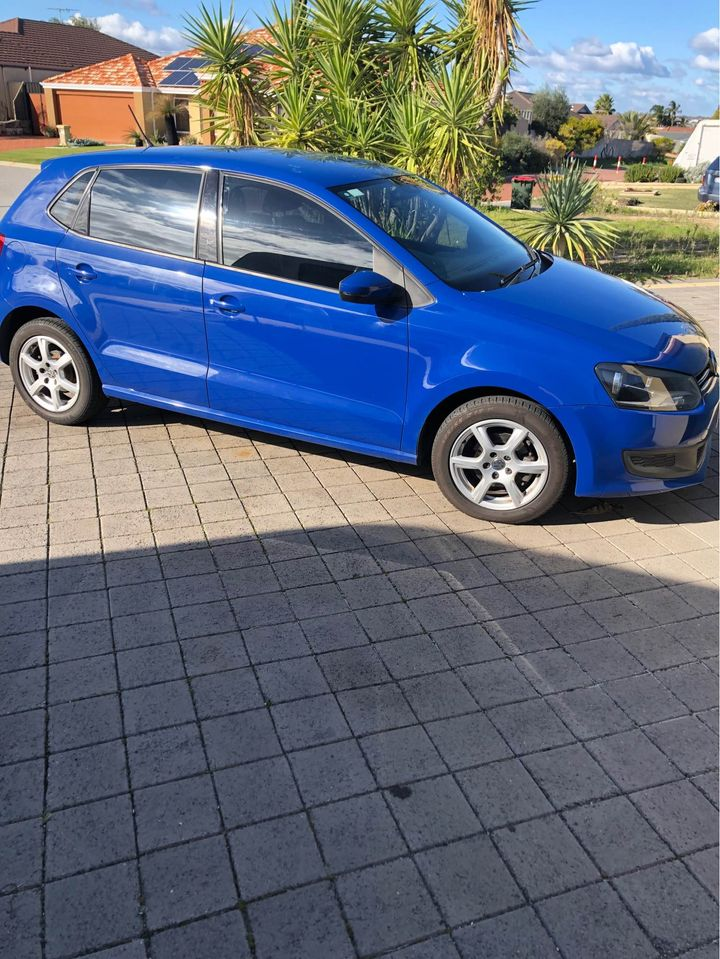

We have developed ways, which assist us in helping the environment instead of harming it. The recycling procedures adopted by us are completely secure and biodegradable. Once the car comes to our yard, we evaluate all its recyclable parts. Then, we discharge the fluids and liquids from the car to prevent harm. Then the car is disassembled. We separate all the parts, which are of better condition. The remaining parts are kept in the lots separately. The unwanted garbage or scrapped material is organized into different lots of rubbers, steels, plastics, and metals, etc.</p

Volkswagen is a reputable car manufacturer that builds cheap, reliable, and trendy cars. The German manufacturer produces several models for the automotive industry in Europe and the United States. These cars are sold and used on the market, which are not only innovative in terms of the engine and exterior, but also are reasonable in price. However, this does not mean that it is an easy task to manage a car manufacturer, and it is easy to let it go bankrupt. The number of Volkswagen cars present in the market is bound to decline sharply due to the incurable violations it committed in recent years, which has caused thousands of cars to be involved in the cheating scandals. Some of its brands are Skoda, SEAT, Seat, Audi, VW, and Bentley.
Recycling of various types of cars: The car recycling program is available with us for a broad range of types of cars such as – Severe service cars – Classic cars – Open vehicles – Transport trucks – Commercial trucks – Industrial vehicles We are the preferred recycling partner for these different types of cars. It allows us to dispose car parts of these types easily. The other companies to recycle the car parts are needing a good deal of time. Then the company has to spend big amount of money to do the job. However, we take care of it at a cost-effective cost and complete the process with ease.
After the car has been dismantled, we take all the different parts into our workshops and separate them according to the quality of the parts and the brand that these parts belong to. We make an estimation regarding the weight of these parts. The parts which are heavy are kept in the shop and the parts which are light are sent to our casting factory. Why Recycling Is Good for the Environment? Composting is an important step in maintaining the balance of all the components that can be recycled. For example, we can segregate human excreta, biological or organic wastes and flushing liquid waste into different products, such as bio-gas, compost, manure and cement. For example, if we segregate all the sewage from Delhi, then we will have the solution of sewage management problem.
1. First, all the car parts are identified and sorted. All the junk parts are immediately sent to a dedicated lot, which is managed by another unit in our estate. The vehicles go through the following processes. Assessment : The yard workers make a thorough examination of the vehicle. They watch to see if any body parts are dangerously damaged. If a part is damaged, it is not recycled. Any materials with clearly visible signs of damage are thrown into a separate lot. The yard workers carry out a large number of tests, including on-board diagnostics, to analyze the safety of the vehicle. Any defects are then displayed on the dashboard. Finally, the vehicle is given a simple health check by an engineer. : The yard workers make a thorough examination of the vehicle.
The recycle techniques adopted by us are transparent and secure. Therefore, you can rely on us. We also provide you with all the components and parts to transform and rebuild the car. We have the right and the best resources to transform the car within your expectations. You can rest assured that we will not misplace any of the materials that you have entrusted to us. Contact Us 31004 W. Roosevelt Blvd, Ste 200, Chicago, IL, 60612. Phone: 773-872-0240. Fax: 773-872-0976 E-Mail: info@vwdiesel.com Website: https://www.vwdiesel.
Address:103 Sheffield Rd, Welshpool WA 6106
Phone: (08) 9358 1392